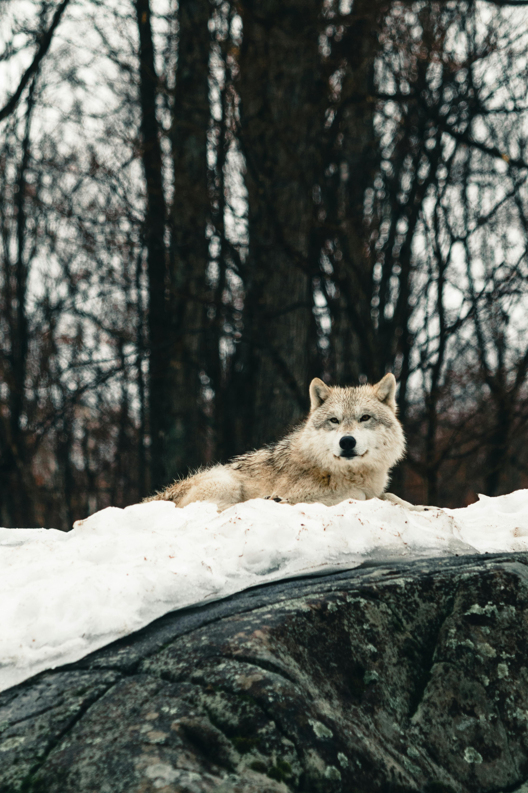

Question 1

10 Great Facts about Arctic Wolves
1. Arctic Wolves Communicate via Sounds and the Position of Their Tail
2. The Arctic Wolf is Smaller Than the Gray Wolf
3. Arctic Wolves Tolerate Complete Darkness
4. Arctic Wolves Live in Packs of Five to Seven
5. Only the Leaders of the Pack Mate
6. The Arctic Wolf is a Very Fast Animal
7. Arctic Wolf Pups Consume Regurgitated Food
8. Arctic Wolves Have a Keen Sense of Hearing, Smell, and Eyesight
9. Arctic Wolves are Relatively Unafraid of People
10. Climate Change is the Greatest Threat to Arctic Wolves